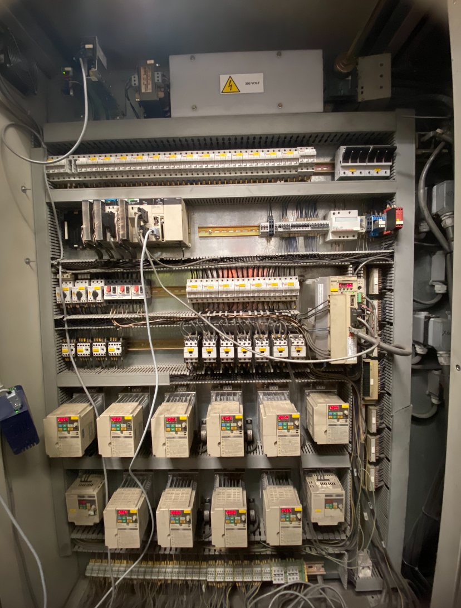

Lors de mon stage chez IS Maintenance, j’ai eu l’opportunité de rédiger un cahier des charges complet dans le cadre d’un projet de retrofit d’une ligne de production multicouche à bulles pour l'entreprise ATI Isolation.
Cette ligne multicouche permet de créer des isolants pour l’habitat, notamment dans le domaine de l’isolation thermique des bâtiments. Elle est dite "multicouche" car elle assemble plusieurs couches d’isolants différents à l’aide de moteurs, vérins et éléments chauffants visibles sur l’image. Le processus est semi-automatisé : une fois la ligne lancée, les couches sont entraînées, chauffées et fusionnées sans intervention manuelle, sauf pour le remplacement des bobines lorsqu’un rouleau arrive en fin de course. Cette automatisation permet un rendement élevé et une constance dans la qualité des produits fabriqués.
Cette mission a été menée directement sur site, à partir de l’observation de la ligne existante et de discussions avec les opérateurs et le responsable technique. L’entreprise ne disposait pas de cahier des charges écrit : il m’a donc fallu analyser les besoins et contraintes exprimés oralement, les structurer et les formaliser dans un document technique exploitable.
Le but était de définir le fonctionnement attendu des différents modules de la ligne, les modifications mécaniques et électriques à apporter, ainsi que les améliorations en matière de sécurité. J’ai identifié les composants nécessaires (moteurs, vérins, freins, chauffes), proposé des solutions adaptées aux attentes du client et organisé l’ensemble de manière logique, claire et accessible aux équipes techniques.
Une partie importante du travail a également porté sur l’analyse des équipements électriques existants, comme illustré sur la photo ci-dessous montrant une armoire technique. L’étude de cet équipement a permis d’évaluer les points de raccordement, les protections à adapter, ainsi que les capacités restantes disponibles pour intégrer les nouveaux modules à la ligne.
Cette démarche m’a conduit à échanger avec plusieurs interlocuteurs (opérateurs, régisseurs, responsables techniques), afin de garantir la cohérence des choix retenus. J’ai également veillé à produire une documentation claire, avec des termes simples, permettant une appropriation rapide par les futurs utilisateurs et techniciens.
Cette expérience m’a permis de mettre en œuvre une démarche complète d’analyse, de communication client et de formalisation technique, tout en respectant les contraintes.
Vue de la ligne multicouche à moderniser
Exemple d’équipement technique étudié dans le cadre du cahier des charges